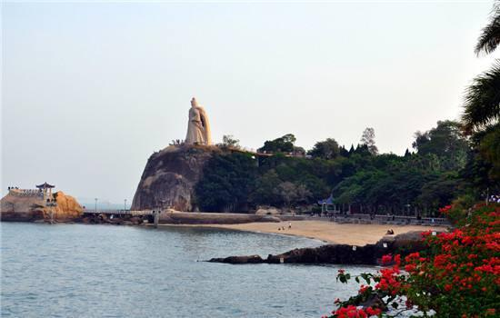

Artistic Country
China
Forbidden City
北京故宫是中国明清两代的皇家宫殿，旧称为紫禁城，位于北京中轴线的中心，是中国古代宫廷建筑之精华。北京故宫以三大殿为中心，有大小宫殿七十多座，房屋九千余间。是世界上现存规模最大、保存最为完整的木质结构古建筑之一。它是一座长方形城池，南北长961米，东西宽753米，四面围有高10米的城墙，城外有宽52米的护城河。紫禁城内的建筑分为外朝和内廷两部分。外朝的中心为太和殿、中和殿、保和殿，统称三大殿，是国家举行大典礼的地方。内廷的中心是乾清宫、交泰殿、坤宁宫，统称后三宫，是皇帝和皇后居住的正宫
Lijiang Rive

丽江市区中心海拔高度为2418米，与同为第二批国家历史文化名城的四川阆中、山西平遥、安徽歙县并称为“保存最为完好的四大古城”。
丽江自古就是一个多民族聚居的地方，共有12个世居民族，其中纳西族23.37万人，彝族20.14万人，傈僳族10.62万人。其中纳西族占古城区及玉龙县（即原丽江县）总人口的57.7%，并且著有“国中贵原，云中丽江。
丽江旅游景点：玉龙雪山、大研古城、云杉坪、白水河、甘海子、冰塔林、束河古镇、拉海市、虎跳峡、泸沽湖、丽江木府、东巴万神园、四方街、印象丽江、玉水寨、梅里雪山、万古楼！
Gulangsu

鼓浪屿位于厦门岛西南面，原名“圆沙洲”，别名“圆洲仔”，明朝改称“鼓浪屿”。乃因岛西南方有一礁石，每当涨潮水涌，浪击礁石，声似擂鼓，人们称“鼓浪石”，鼓浪屿因此而得名。鼓浪屿有许多幽谷和峭崖，沙滩、礁石、峭壁、岩峰，外形奇丽俊秀，其街道纵横交错，清洁幽静，空气新鲜，岛上树木苍翠，繁花似锦，小楼红瓦与绿树相映，格外漂亮。鼓浪屿有许多浓烈的欧陆风格的建筑，被称为是建筑的博览馆.鼓浪屿被称为是“音乐家摇篮”，“钢琴之岛”，漫步海滩上经常会听到钢琴的美妙的音符传来，钢琴声与海浪声相互应答，音乐，已成为鼓浪屿一道绚丽的风景线。另外这里还是明末英雄郑成功屯兵的地方。